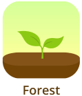
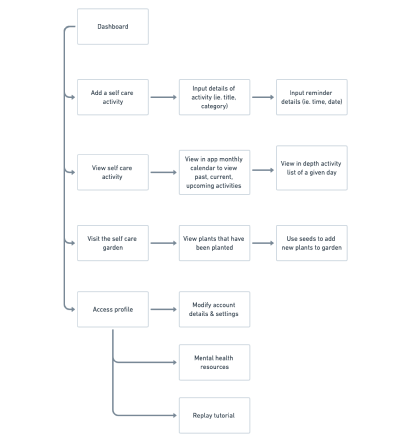
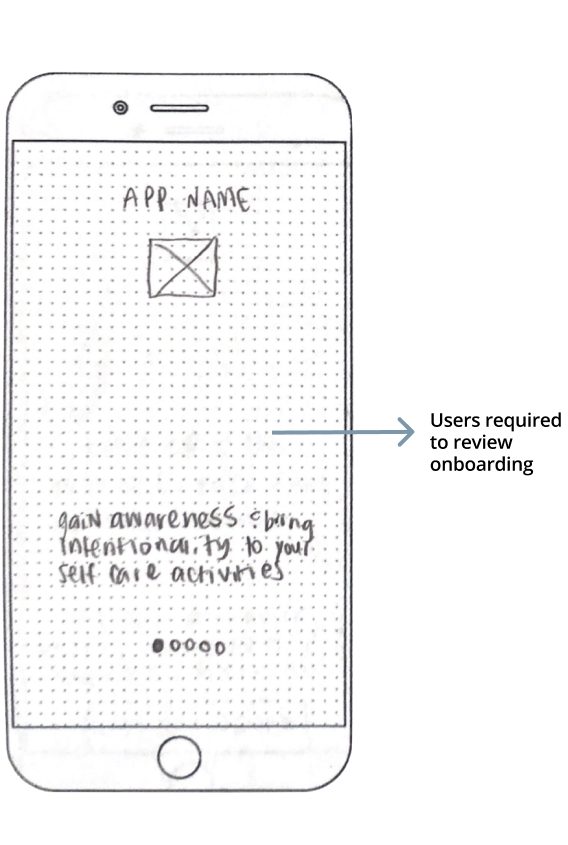
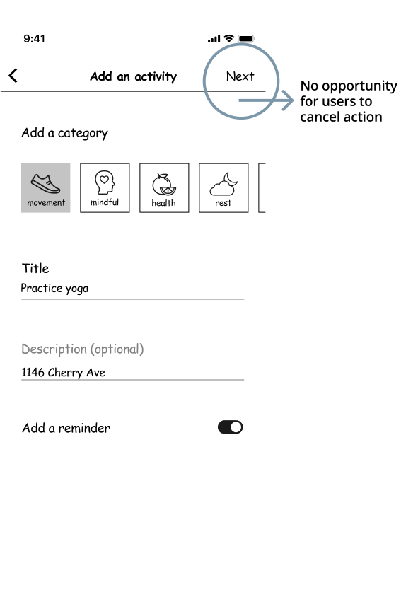
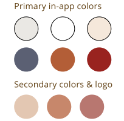

Sproutful
Gain awareness & bring intentionality to your self care activities.
View prototypeRoles
User Research • UX Design • Information Architecture • Branding • Visual Design
Deliverables
User Surveys • User Stories • User Personas • User Flows • User Testing • Competive Analysis • Sitemap • Logo Design • Style Guide • Wireframes • Prototype
Tools
Figma • Sketch • InVision • UsabilityHub • Maze • Google Forms • Adobe Photoshop
Duration
July 2019 – August 2019
The problem
With our tasks at work piling up and calendars notifying us of items past due it can be extremely stressful. Often, in times of high stress, self care activities like, taking a lunch break or spending time on a hobby, are the first places we sacrifice time on. When we’re busy and overwhelmed, taking the extra time to give back to ourselves can feel indulgent and timely.
How can we increase our awareness of practicing healthy self care habits and implement small, positive self care activities in a modern and consistent way?
The solution
Sproutful is a self care activity tracker that helps you set aside time for you. Quickly set your own customized goals and reminders and check back regularly.
What differentiates Sproutful from others in its industry is the self care garden. As you add and complete more self care activities, the more seeds for your garden you earn - a relaxing incentive to check in on yourself. The more seeds you earn, the more plants you can plant in your self care garden. Take care of yourself, take care of your garden simultaneously, then get back to your best self.
The process
Discovery & Research
User research
From nearly 40 responses users ranged in age from 16 to 51 years old, participants helped me understand what could be improved upon the ways they currently track their self care as well as the pain points that are associated with their current methods.
- 92% of participants had recently or were currently practicing self care
- 74% of users did not currently have a way to remind themselves to practice self care
- 82% of users did not have a way to track their self care
- 72% of users felt that digitally tracking their self care habits in an app would be beneficial to ensuring it was a priority
The underlying challenges included the lack of active reminders to keep self care a priority, the informality of ways users were keeping track of their activity (mentally noting when they had practiced self care or when it felt overdue) and customizability limitations in other apps.
Competitive analysis

- 
User personas
To solidify a strong and consistent understanding of user needs after collecting data, I crafted several user personas. Not only would these personas help when crafting user stories, wireframes and overall site architecture, creating user personas helps build an even greater sense of empathy for the users throughout the entire design process.
Users ranged from individuals looking for a healthier outlet to check in with their mental health habits, users who were new to activity tracking but wanted a space to be held accountable for incorporate more small self care activities into their daily lifestyle as well as users looking for a more customizable and robust activity tracker.
Information Architecture
User stories
- 1 Onboarding
- 2 Create, edit & complete a custom self care activity
- 3 Set gentle reminders
- 4 Visualize what activities have been tracked
- 5 Incentivize self care activities being practiced with an in-app garden gamified experience
User flows & sitemap
With my user stories built out, I began thinking about overall app’s architecture. How can an app primarily dedicated to providing users greater accessibility to tracking and completing self care activities be balanced out with a positive reinforcement and incentive to return and continue to consistently positively impact mental health and awareness? Finding a balance between the main premise of the app as well as a relaxing, non-competitive gamified experience was the biggest challenge when crafting user flows and an overall sitemap. Spending time clarifying the overall app’s flow not only benefited my own process but also ensured a well thought out experience for the users as well.
 View user flows & sitemapPrototyping & Testing
Wireframes & low fidelity prototype testing
Wireframing and testing a low fidelity prototype early in the design process helped me assess what tasks users were able to master and what task flows needed to be refined further to provide the smoothest user experience. Across user testing, I developed a few key takeaways that would be addressed to in further refinements that focused on providing the users appropriate choice in multi-screen flows. Users asked to sign up, edit & complete an activity, add a new activity and identify calendar and self care garden features.
View low fidelity prototypeKey takeaways and action items from user testing:
— Users in onboarding need to be able to access options appropriate to them (ie. log in, sign up, skip) rather than required to review onboarding tutorial
— Opportunity to strengthen modal window to allow users to cancel their action instead of using back button across multi-screen flow
Visual design
Brand story & logo
To craft a logo and name, I began with sketches and word association exercises which helped me brainstorm concepts and the brand’s look and feel. With those in mind, I gravitated towards gardening and nurturing elements that contributed to both the brand and premise of the app. I settled on a minimal watering can element mixed with a sun as the handle as it connects well with the gamified experience as well as provides a feeling of caring and positivity. The name “Sproutful” steams from the suffix -ful, meaning “full of” and sprouts growing from seeds which ties in with self growth and the gamified experience of the app.
Colors
Neutrals were used to keep the screens from being overwhelming and rich warm colors were used as for highlighting visual elements, symbols and active buttons. A secondary lighter color palette of the warm colors were used for the logo’s branding and secondary & inactive buttons.
Typography
Lora was the font used solely for the wordmark due to its serif nature resembling the handle of the watering can. For all other in-app text, Nunito was the font used. Being a rounded sans-serif font, its qualities matched the brand identity aimed at being warm, inviting and friendly.
View full style guideHigh fidelity mockups
Testing & refinements
After creating high fidelity mockups and refining changes from earlier user testing and feedback, I began the second round of user testing to review the success of my refinements and again address the clarity of my user flows and visual design with users both in person and remotely. Two key takeaways emerged from user testing and refinements were made accordingly.
Users had to remember from onboarding what the seed icon's function was and needed additional encouragement to engage with it due to their unfamiliarity.
#1. Action item:
- — Provide in app guidance and encouragement for users to engage with unfamiliar, app-specific icons in multiple ways
User test heat map of initial design
Revised design
User testing revealed frustration for users who did not engage with either CTA button during onboarding and then were again prompted with the same options when tapping “Continue”.
#2. Action item:
- — Optimize user flow for users engaging with current screen
Initial design
Revised design
Conclusion
How was the problem solved?
- — Built out and presented only necessary features outlined by the user stories and developed MVP
- — Focused in on providing an app to address well researched user needs
- — Ensured that visual hierarchy and design matched the branding vision
Major takeaways
- — Assist users in unique, app-specific icons and flows in multiple ways. While user testing revealed that some users recognized the seed icon from onboarding, many users struggled with identifying the function of that icon in practical in-app use. Giving another visual guide, like a small pop over message, for first time users can be something quick and non distracting but helps aide users confidence and engagement with the app.
- — Thinking critically and empathetically about choices presented to users is key. Designing for the situations a user would encounter and providing them appropriate options and flexibility across all screens helps build a more expected, enjoyable experience. Do returning users go through all onboarding screens or are they more likely to simply log in on the first screen? What if a user wants to cancel their changes they made to their activity mid-flow? Providing the user with the most applicable options helps them navigate to get the most out of their app experience.